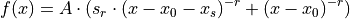

hyperspy._components.eels_double_power_law module¶
-
class
hyperspy._components.eels_double_power_law.DoublePowerLaw(A=1e-05, r=3.0, origin=0.0, shift=20.0, ratio=1.0, left_cutoff=0.0, module='numexpr', compute_gradients=False, **kwargs)¶ Bases:
hyperspy._components.expression.ExpressionDouble power law component for EELS spectra.

Variable
Parameter

A

r

origin

shift

ratio
- Parameters
The left_cutoff parameter can be used to set a lower threshold from which the component will return 0.
-
function_nd(axis)¶ Returns a numpy array containing the value of the component for all indices. If enough memory is available, this is useful to quickly to obtain the fitted component without iterating over the navigation axes.
-
grad_A(x)¶
-
grad_origin(x)¶
-
grad_r(x)¶
-
grad_ratio(x)¶
-
grad_shift(x)¶